Префектура Окинава · Агуни, Тонаки, Кумэдзима · острова и история
Острова к западу от Нахи: Агуни, Тонаки и Кумэдзима, гавань королевства Рюкю
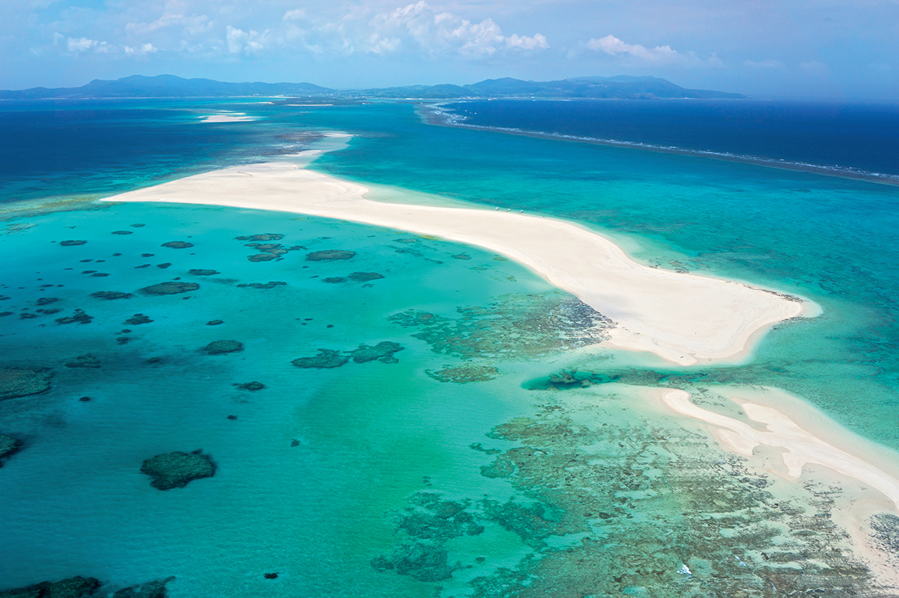
К западу от Нахи, в двух-трёх часах на пароме, лежат три острова. Агуни сложен из застывших следов древних вулканов, Тонаки сохранил старую деревню, где можно не запирать дверей, а на Кумэдзиме столетиями пережидали бурю корабли королевства Рюкю.
Агуни
Остров вулканических пород и соли
В префектуре Окинава около 160 больших и малых островов, и на 37 из них, кроме самого острова Окинава, живут люди. Агуни лежит к северо-западу от Нахи. Основа острова это отложения вулканических извержений, случившихся несколько миллионов лет назад, и на побережье их видно невооружённым глазом.
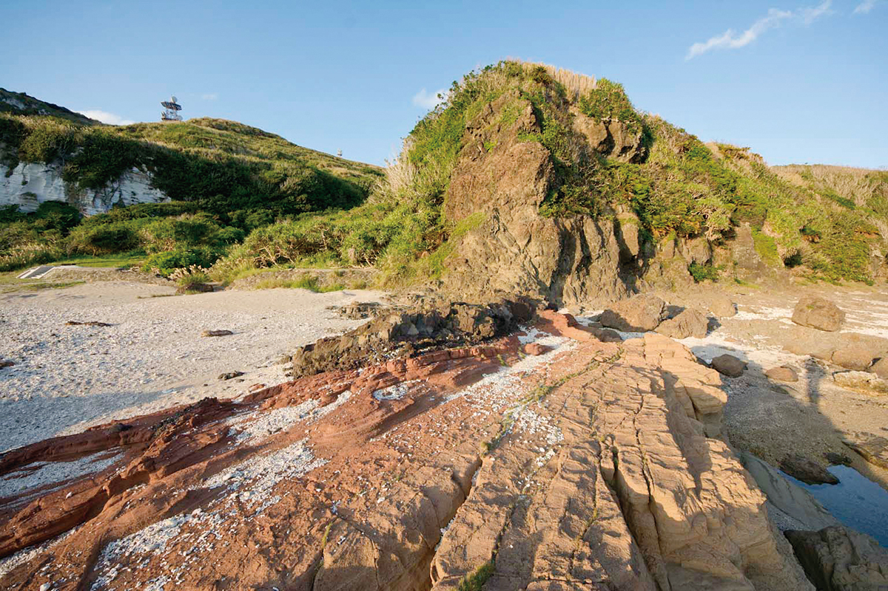
Голые пласты чёрного, красного, белого и других цветов лучше всего смотреть у причудливой скалы «Ямату-гаа» и на берегу Яхидзя. Среди других мест острова пещерный храм «Тэра» и пляж Уугу.
Агуни знают и за соль «Агуни-но сио». Её выпаривают в башнях особой конструкции, которые есть только здесь. С солью связан и старый обряд «Маасуя», что значит «торговец солью»: участники обходят дома, раздают каждой семье соль и молятся о здоровье и богатом урожае. Ещё один праздник острова называется «Страна „А“». Из местных продуктов стоит попробовать соль, чёрный сахар и хворост «каринто» из клейкого проса моти-киби.
Остров Агуни
- Как добраться
- самолёт из аэропорта Наха до аэропорта Агуни, около 30 минут; паром «Нью ферри Агуни» из порта Томари (Наха), около 2 часов. По острову: местный автобус, маршрутное такси по вызову, прокат автомобилей
- Телефон
- +81 98-896-5151 (туристическая ассоциация Агуни)
Тонаки
«Остров без дверей»
Тонаки лежит на пути из Нахи в Кумэдзиму. Здесь сохранился облик старой Окинавы: дома под красной черепицей и каменные ограды. Всю деревню государство объявило охраняемым кварталом традиционной застройки.
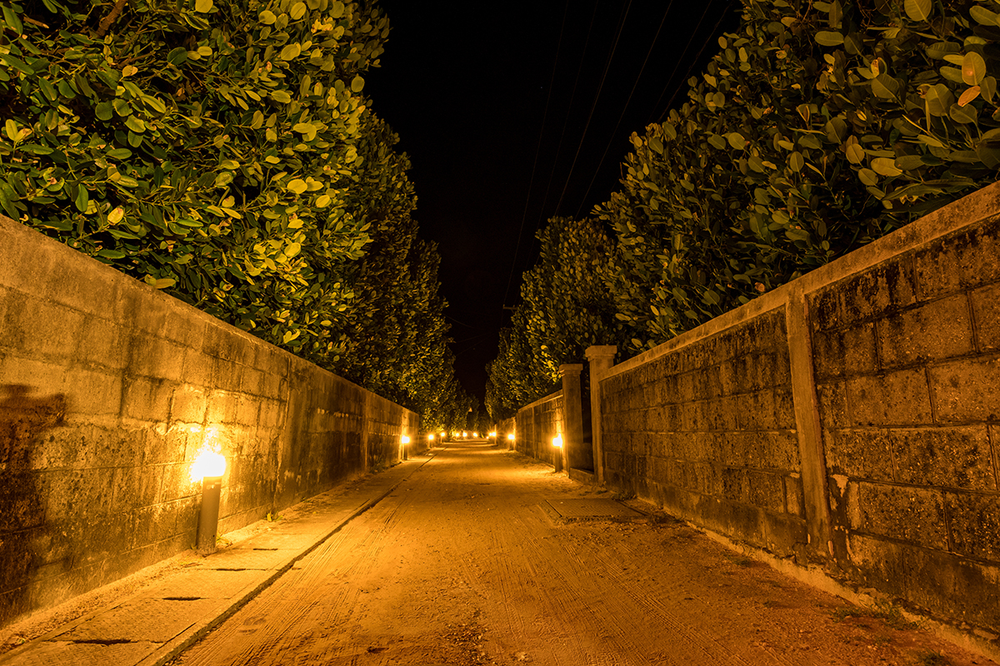
Фонарных столбов в деревне нет. Вместо них по ночам песчаные дорожки подсвечивают невысокие огни у самой земли, и улочки становятся похожи на декорацию к сказке. Эта подсветка давно стала главной достопримечательностью острова. Тонаки ещё называют «островом без дверей»: здесь так спокойно, что дома можно не запирать. На острове царит ласковая, немного ностальгическая атмосфера, и её чувствуешь, просто гуляя.
Кроме деревни стоит дойти до пляжей Агари-хама и Ёбуко-хама. Местные продукты: просо моти-киби и островная морковь. Праздники острова: перетягивание каната «Касики», спортивный праздник на воде и лодочные гонки «хари» в честь морского божества.
Остров Тонаки
- Как добраться
- паром «Ферри Рюкю» из порта Томари (Наха), около 2 часов, или из порта Канэгусуку (Кумэдзима), около 1 часа 30 минут. По острову: прокат велосипедов, пешком
- Телефон
- +81 98-996-3758 (туристическая ассоциация Тонаки)
Кумэдзима
Остров Куми и его белые косы
Кумэдзима лежит примерно в 100 километрах к западу от порта Наха. Во времена королевства Рюкю здесь останавливались суда, ходившие в Японию, Китай и Юго-Восточную Азию, и остров славили как «остров Куми», то есть остров красоты. Весь он объявлен природным парком префектуры, зелени здесь много, а видов хватит на несколько дней.
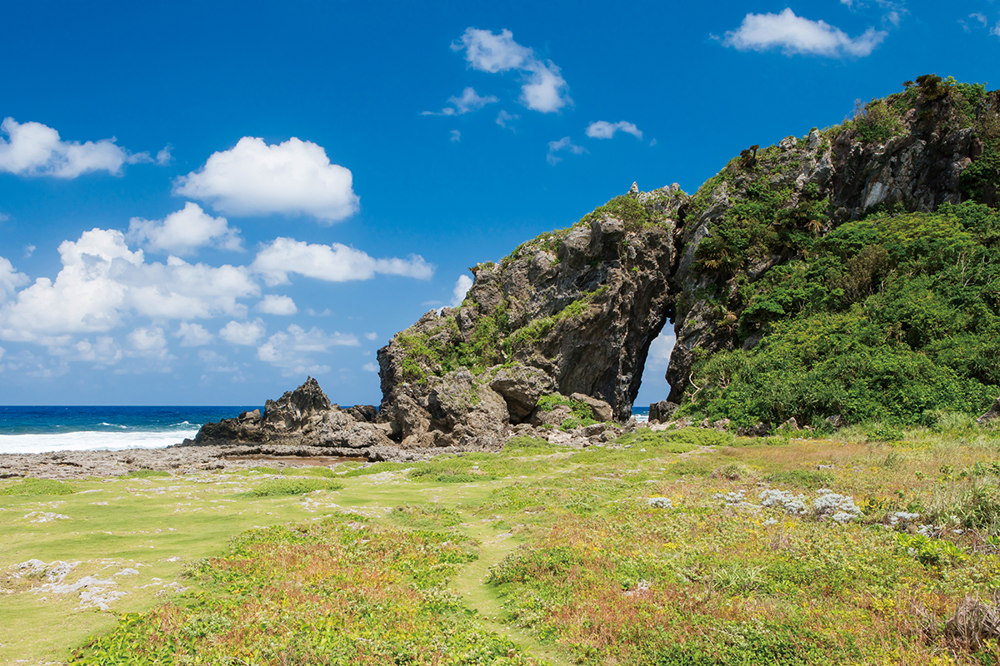
На востоке, в море, лежит «Хатэ-но хама», остров из одного лишь белого песка длиной около 7 километров. Так называют сразу три косы: Мээну-хама, Накано-хама и Хатэ-но хама. Белый песок на фоне изумрудной воды виден издалека. На самом острове стоит посмотреть скалу «Мифуга», которую выточили ветер и прибой, смотровую площадку «Хияда банта» и руины замка Уэгусуку.
У Кумэдзимы своя кухня. На глубинной морской воде, богатой минералами, выращивают морской виноград уми-будо, развито и производство ферментированных продуктов, например мисо «Кумэдзима мисо». Попробовать стоит местных креветок курума-эби и печенье с мисо. Главные праздники острова: лодочные гонки «Кумэдзима хари» и «Кумэдзима мацури».
Не забудьте и о ремесле. Шёлк «кумэдзима-цумуги» ценят за простую, мягкую фактуру и глубокие, ни на что не похожие оттенки. В эпоху Эдо жители Эдо покупали его под названием «рюкюский шёлк».
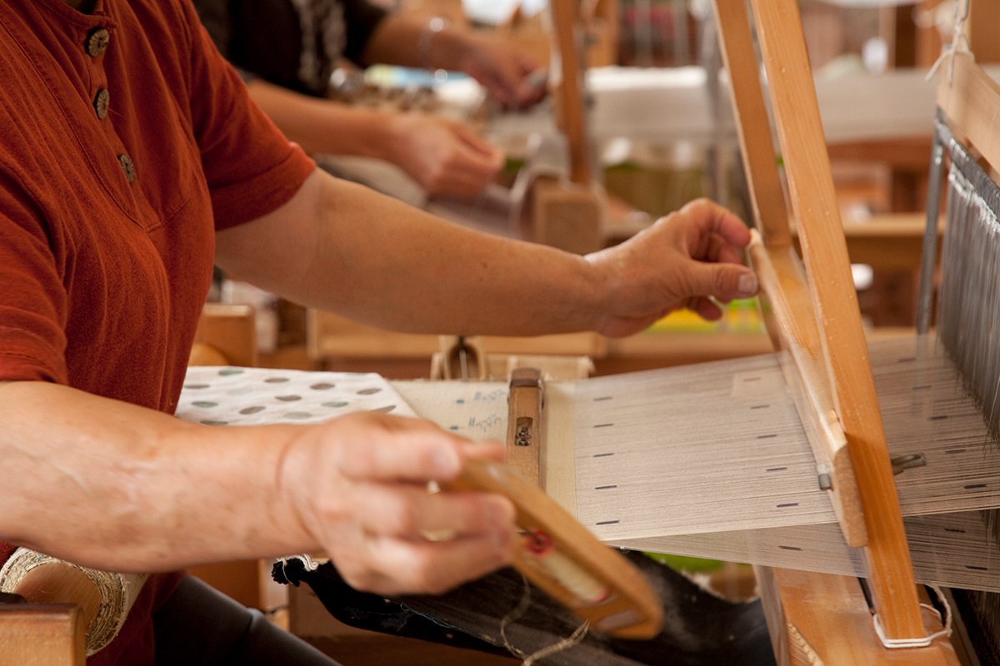
Остров Кумэдзима
- Как добраться
- самолёт из аэропорта Наха до аэропорта Кумэдзима, около 30 минут (в отдельные сезоны летают и из Ханэды, около 2 часов 35 минут); паром из порта Томари (Наха), около 3 часов, через Тонаки около 3 часов 30 минут. По острову: рейсовый автобус, такси, прокат автомобилей, мотоциклов и велосипедов
- Телефон
- +81 98-851-7973 (туристическая ассоциация Кумэдзимы)
Гавань
Как китайская богиня оказалась под красной черепицей
Королевство Рюкю существовало около 450 лет, с XV по XIX век, и было морским государством, жившим торговлей по всей Азии. Историк Рюкю рассказывает, почему Кумэдзима была для него так важна.
В порту Мадзя на Кумэдзиме корабли пережидали непогоду и ждали попутного ветра. В деревне у порта до сих пор стоит храм «Тэнкогу». В нём почитают Мацзу, китайскую богиню, которая хранит мореходов.
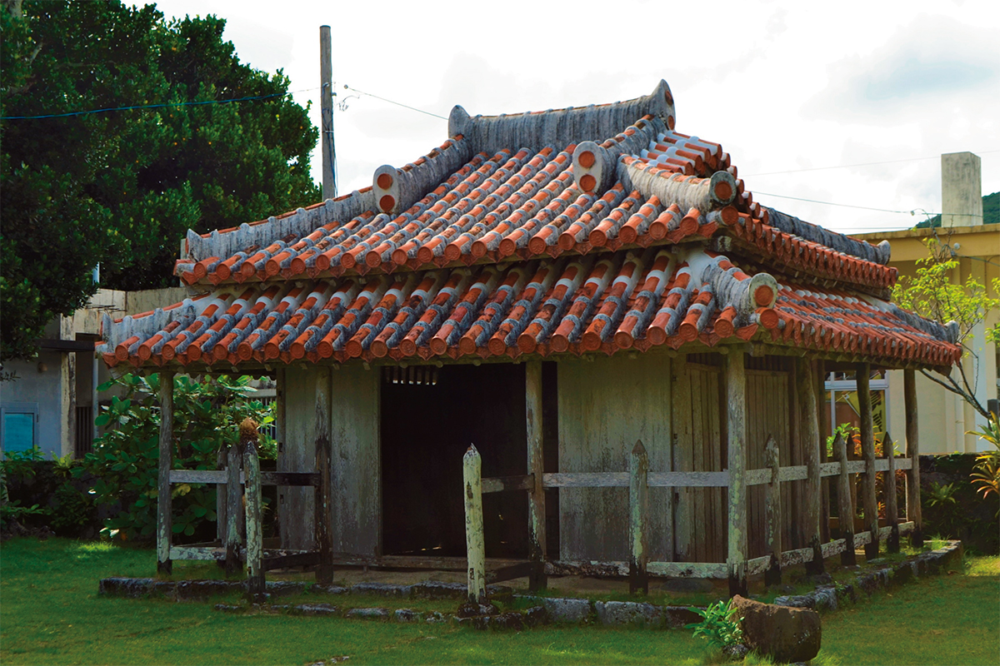
Храм появился после того, как в 1756 году китайское посольство, прибывшее на торжества по случаю восшествия на трон короля Сё Боку, попало в шторм, и жители Кумэдзимы спасли людей. Сама богиня выглядит совсем по-китайски, а здание покрыто красной черепицей, как принято на Окинаве. Любопытно, что рюкюская сторона несколько раз предупреждала китайцев о приближении тайфуна и советовала либо высадиться на Кумэдзиме, либо сразу идти в Наху, но предупреждения не послушали. Благодарные гости сами попросили двор в Сюри построить на острове храм. Как бы то ни было, история показывает, каким важным узлом международных морских путей считали Кумэдзиму.
Чаши
Тэммоку для японской моды на чай
На севере Кумэдзимы поднимается гора Уэгусуку высотой около 310 метров, а на её вершине лежат руины замка Уэгусуку. При раскопках здесь нашли множество чаш тэммоку XIV–XV веков.
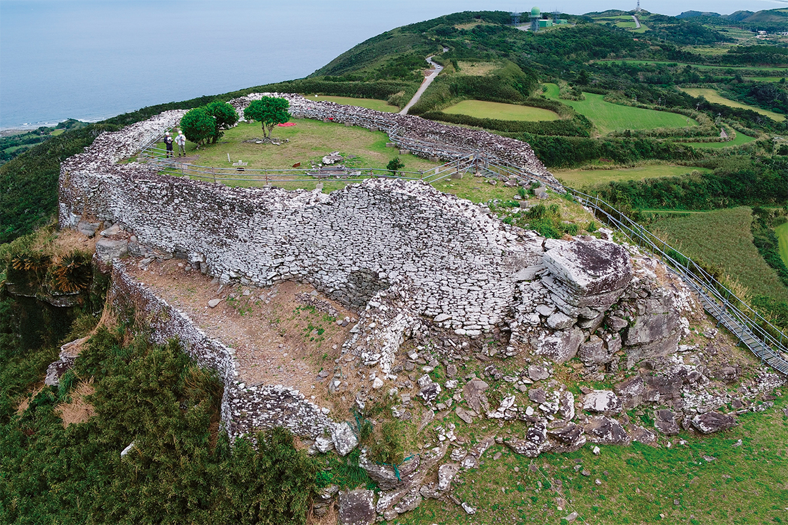
В Японии в то время началась мода на чай. Она охватила и дзэнских монахов, и самураев, а заморская посуда ценилась особенно высоко. В китайской провинции Фуцзянь работали печи Цзянь, известные ещё со времён Южной Сун (нынешний город Наньпин). А Фуцзянь это место, куда постоянно заходили рюкюские корабли: эту эпоху называют временем великой торговли Рюкю.
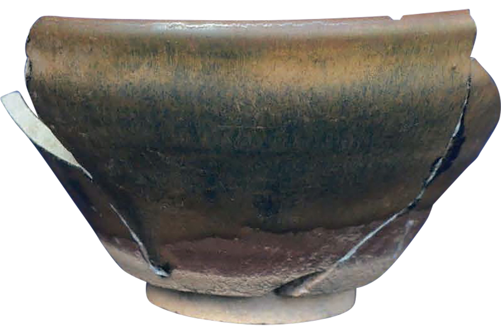
Похоже, рюкюские купцы покупали тэммоку в портах Фуцзяни, чтобы перепродать в Японию. Чай пили и на самом Рюкю, и в замке Сюри тоже нашли много таких чаш. Но на Уэгусуку их оказалось явно больше, чем мог использовать один остров, поэтому считается, что это был товар для Японии. По словам историка, если знаток хвалил чашу, даже небольшой изъян могли счесть «характером», и цена росла. Для Рюкю это был рискованный, но очень выгодный товар.
Где увидеть
Морское королевство на острове Окинава
Следы морского королевства можно найти и на главном острове, не уезжая далеко от Нахи.
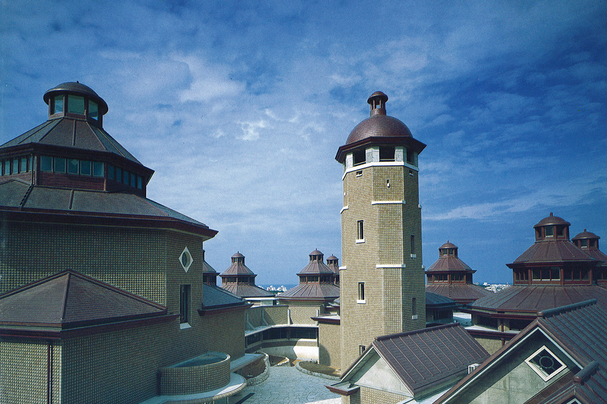
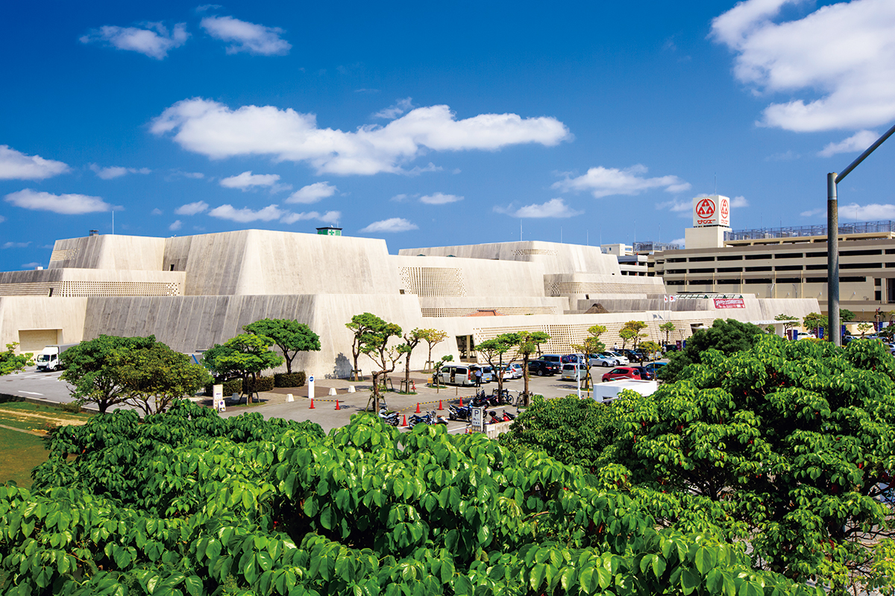
В Художественном музее Урасоэ выставлены копия ширмы «Торговый порт Рюкю» и рюкюская лаковая посуда, по ним хорошо видно, какой была культура королевства. В Музее префектуры Окинава хранится колокол «Банкоку синрё», бывший колокол главного зала замка Сюри. Его звон можно услышать каждые 30 минут.
Художественный музей Урасоэ
- Адрес
- префектура Окинава, Урасоэ, Накама, 1-9-2
- Телефон
- +81 98-879-3219
- Часы работы
- 9:30–17:00 (последний вход 16:30), в пятницу до 19:00 (последний вход 18:30)
- Выходные
- понедельник
- Цены / Вход
- 300 иен
Музей префектуры Окинава
- Адрес
- префектура Окинава, Наха, Оморомати, 3-1-1
- Телефон
- +81 98-941-8200
- Часы работы
- 9:00–18:00 (последний вход 17:30), в пятницу и субботу до 20:00 (последний вход 19:30)
- Выходные
- понедельник, бывают и другие
- Цены / Вход
- зависит от выставки
- Сайт
- okimu.jp
«Рюкю мура» в деревне Онна это этнографический парк. Здесь можно посмотреть, как по старинке буйвол ходит по кругу и вращает пресс для сахарного тростника.
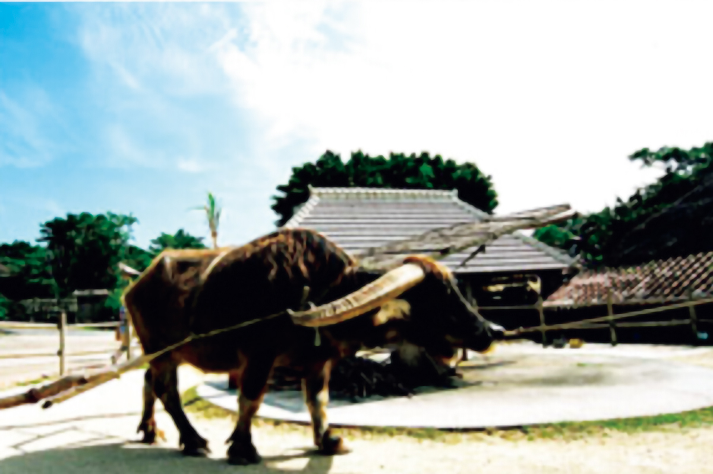
«Рюкю мура»
- Адрес
- префектура Окинава, деревня Онна, Ямада, 1130
- Телефон
- +81 98-965-1234
- Часы работы
- 9:30–17:00
- Выходные
- без выходных
- Цены / Вход
- 2000 иен
- Сайт
- ryukyumura.co.jp
В Нахе в святилище Ёмоти почитают Синдзё Гиму и Ногуни Сокана, которые принесли на Рюкю производство сахара и батат, а также сановника Сай Она.
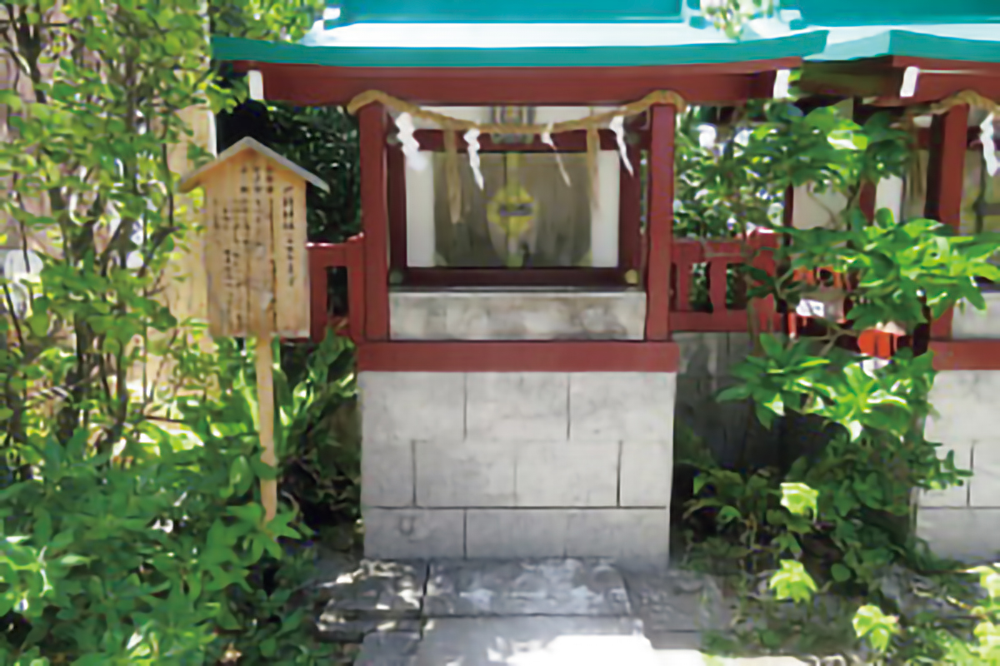
Святилище Ёмоти
- Адрес
- префектура Окинава, Наха, Вакаса, 1-25-11
- Телефон
- +81 98-868-3697 (святилище Наминоуэ)
Мигусуку, руины крепости на самом краю порта Наха, были местом, откуда во времена королевства провожали уходящие корабли. Крепость, охраняющую порт, можно узнать на гравюре Хокусая «Ринкай косэй» из серии «Восемь видов Рюкю».
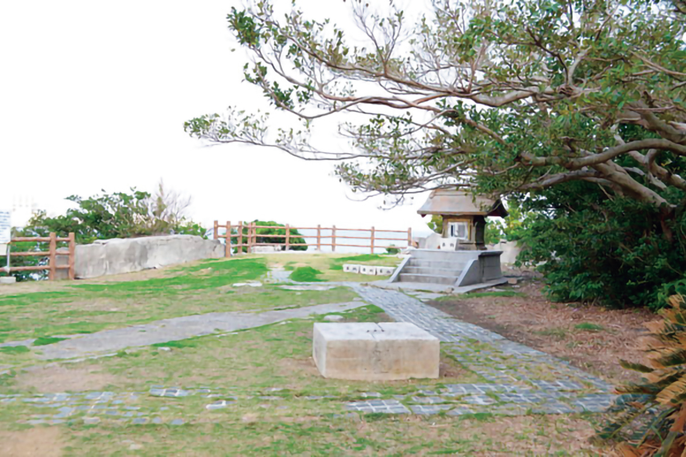
Мигусуку
- Адрес
- префектура Окинава, Наха, Ниси, 3-2-35
- Телефон
- +81 98-917-3501
- Часы работы
- свободный доступ
- Выходные
- без выходных